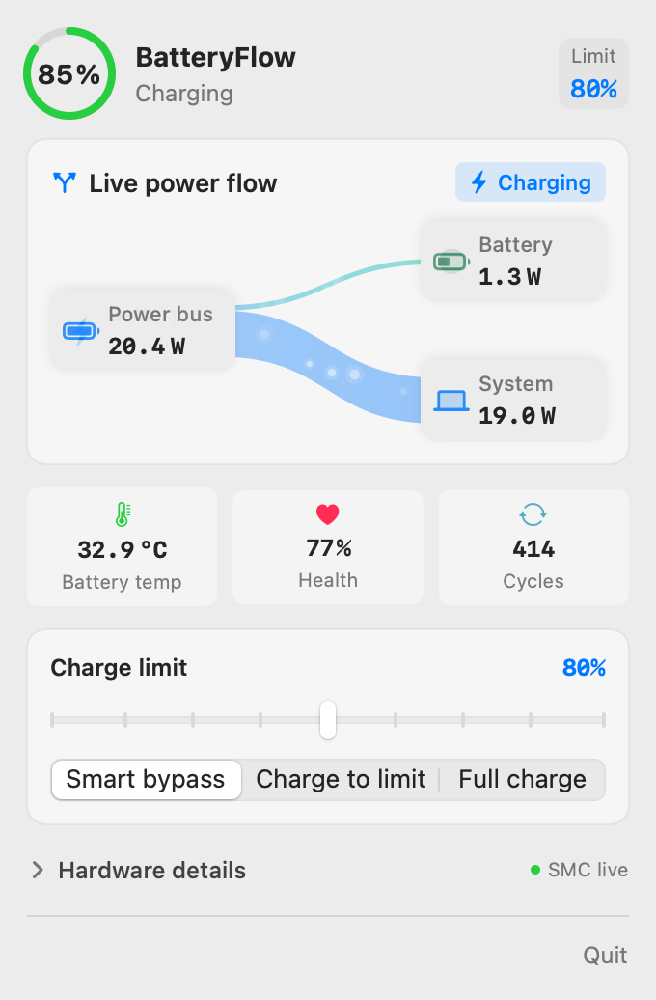
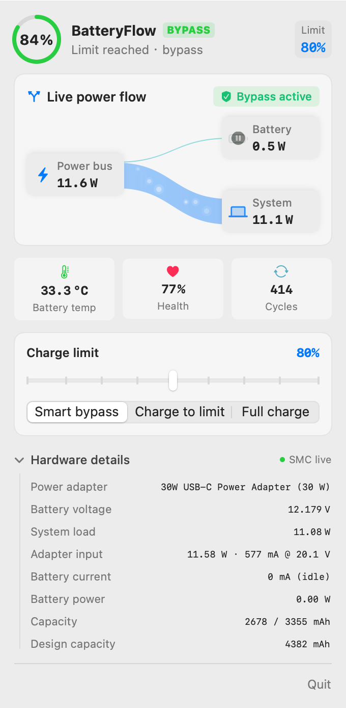

纯原生 SwiftUI 打造的极致轻量菜单栏工具。独创双分支能量流桑基图、底层寄存器级硬件电源直通旁路、AppleSMC 秒级深度遥测，让电池寿命与功耗洞悉兼收并蓄。


在网页中亲手体验 BatteryFlow 的核心灵魂：随时切换供电模式与电量阈值，直观感受电源总线、电池与系统负载间的真实瓦数流动。
摒弃臃肿的 Electron 与模糊估算。每一个像素、每一行逻辑均直通 macOS 原生内核。
告别仅显示百分比的时代。自研轻量几何 Bézier 插值流向算法，精确呈现外接供电、电池充放电、主板芯片负载三方实时分配。
插电工作时直连充电器供电，电池电流严格保持为 0 mA。杜绝反复微循环充放与高电量胀气风险，从根本上锁死电池寿命衰减。
兼容 macOS 最新固件体系（支持 bfF0/bfD0/bfE0 现代寄存器），完美替代废弃的 CH0B/CHTE 指令，兼容性更稳固。
绕过延迟高达 60 秒的传统系统轮询，以 1 秒周期直接读取瞬时电流、端电压、适配器实际输入与电池内阻温度。
无 Dock 图标纯菜单栏形态 (LSUIElement)，支持锁屏与休眠自动挂起轮询。绝不在后台默默蚕食你的内存与算力。
无需降低 macOS 安全策略，无需关闭 SIP。仅需一次性授权最小化特权 Helper，代码 100% 开源可查，随时一键彻底干净卸载。
全面拥抱现代 Apple Silicon 架构规范，摒弃过时废弃的底层 Hack，兼顾极致性能与系统级安全。
// 1. 传统老旧工具：调用已在最新 macOS 移除的寄存器 (已失效)
- SMCKey("CH0B") // Obsolete on M-Series firmware
- SMCKey("CHTE") // Deprecated
// 2. BatteryFlow：原生驱动现代 SMC 寄存器链 (安全无阻)
+ SMCKey("bfF0") // Power Routing Mode Control
+ SMCKey("bfD0") // Upper Charge Protection Limit (e.g. 80%)
+ SMCKey("bfE0") // Lower Hysteresis Limit (e.g. 75%)
// 3. 秒级高保真遥测
PowerManager.shared.start1HzSampling()锂电池长期处于 100% 满压（4.2V~4.35V）状态并伴随工作发热，是导致电芯容量永久衰减与鼓包的头号元凶。
用事实说话。了解 BatteryFlow 与其他电源管理方案的核心差异。
| 核心功能维度 | BatteryFlow (本项目) | macOS 原生电池优化 | 常见第三方商业工具 |
|---|---|---|---|
| 双分支动态能量桑基图 | 独创支持 (实时瓦数流向) | 无 | 无 (仅传统图标) |
| 真·硬件级电源旁路 (Bypass) | 支持 (0 mA 零循环) | 系统不可预测触发 | 多需高阶商业付费版解锁 |
| 秒级 AppleSMC 底层传感器遥测 | 1 秒刷新 (电压/电流/温度) | ~60 秒系统事件延迟 | 仅显示部分基础数据 |
| 最新固件寄存器架构 (bfF0 / bfD0) | 原生全面支持 | 系统专有私有协议 | 老旧 SMCKey 混合 |
| 资源消耗 (CPU 占用) | ~0.3% (锁屏即休眠) | 内嵌系统守护 | 约 0.8% ~ 1.5% |
| 开源协议与商业模式 | 100% 永久开源免费 (MIT) | macOS 自带 | 商业闭源 / 订阅收费 |
关于安全性、原理与安装细节，你关心的都在这里。
完全不需要！BatteryFlow 严格遵循 Apple 安全开发规范，通过经由系统授权的最小化特权 Helper（安装在 /usr/local/libexec/batteryflow-smc）与 SMC 寄存器通信，无需关闭 SIP，亦无需降级内核安全策略。
锂离子聚合物电池在充至 80% 以上时，电极内部极化电压与电势迅速升高，化学活性剧烈增加并产生更多焦耳热。维持在 60%~80% 区间可使电池长期处于化学稳定低压状态，寿命延长 2~3 倍。
全面支持 macOS 13.0 Ventura 及以上版本，包括所有搭载 M1 / M2 / M3 / M4 芯片的 MacBook Air / MacBook Pro 系列，以及大部分配备 T2 芯片的后期 Intel MacBook。
只需在终端执行以下两条标准命令，即可恢复默认充电状态并彻底删除 Helper，绝不留任何残留：
sudo /usr/local/libexec/batteryflow-smc reset
sudo rm -f /usr/local/libexec/batteryflow-smc /etc/sudoers.d/batteryflow完全免费且开源。支持一键下载安装或从源代码纯手工编译，无任何隐私跟踪或商业套路。